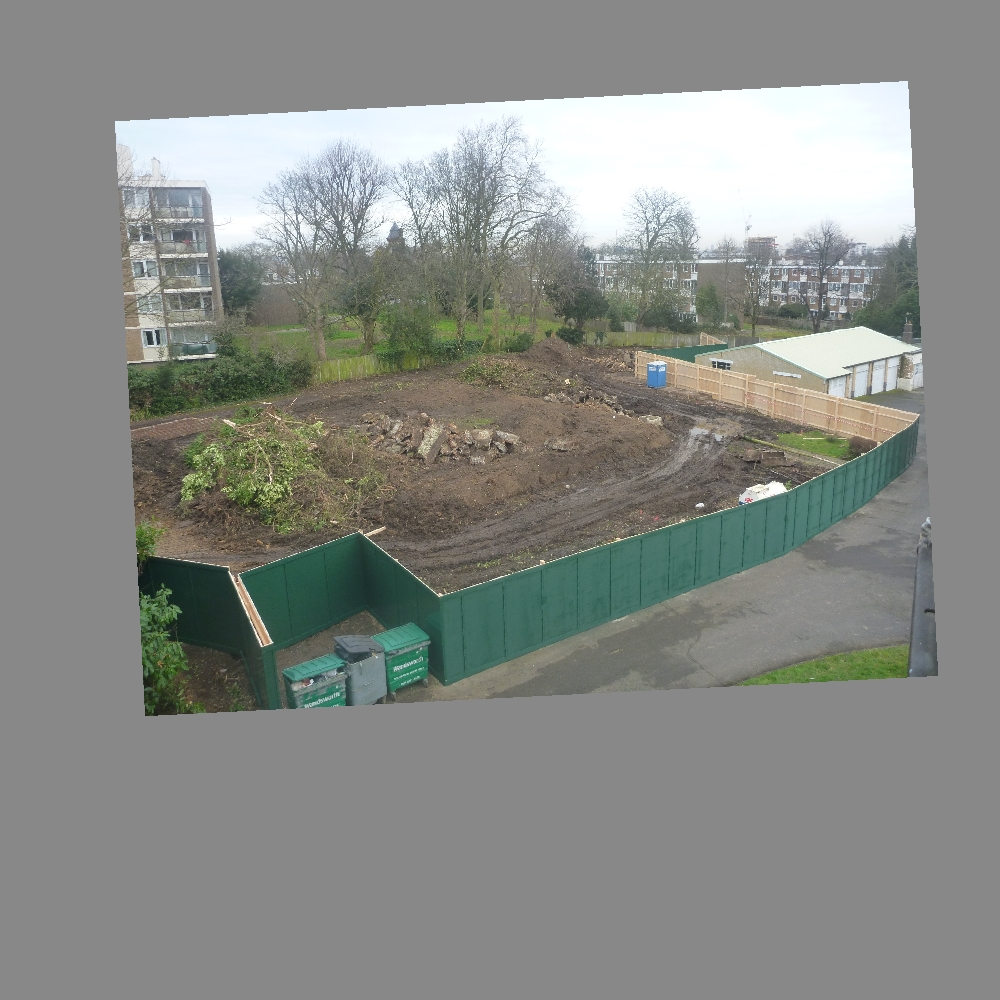
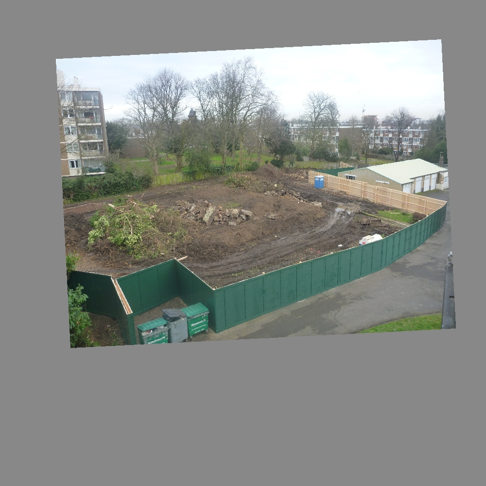
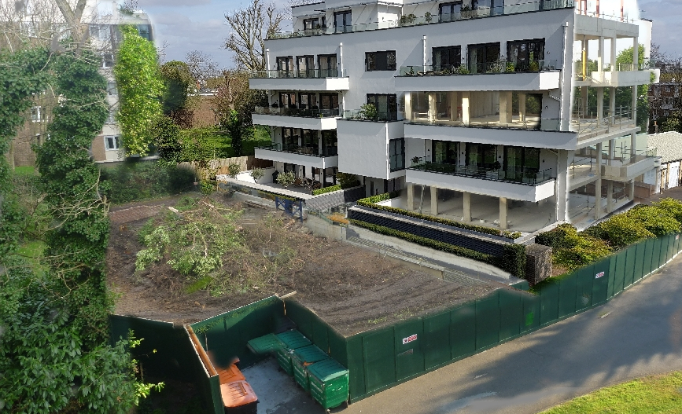

Interesting effects can be produced from a set of aligned images by exposing different sections of different images and then combining them into a single image. In this way, an image can be produced showing views from different dates juxtaposed to each other. For example, the following images
 



can produce the image where the right wall of the flat shows an earlier stage of construction.

and a less subtle example, where there are time shifts (fairly randomly) throughout the scene:
An easy way of achieving this effect is by exporting the aligned images form Zoetic and loading each of the aligned images, as a separate layer, into an image editor such as GIMP or Photoshop. Each layer can then be partially exposed, using the image editor's tools, creating 'time holes' to the past or future.
Getting the images into the image editor can be done either by (1) converting the aligned images into a single multi-layer file format supported by the image editor or (2) loading the individual images directly into the image editor.
Export the images using Zoetic's Export Aligned Images function (in Zoetic's menu). Then, on the platform you will be using, unzip the Zoetic exported file, which will result in the files: composite.jpg, image1.jpg, image2.jpg...
Then follow either Approach 1 or Approach 2.
Approach 1: Using free software such as Image ImageMagick convert the images into a mult-layer file format such as .PSD. Assuming ImageMagick has been properly installed, enter at a command line:
convert composite.jpg image0.jpg image1.jpg image2.jpg image.psd
Add as many Zoetic exported JPGs to the command as required. The resulting image.psd can be opened in GIMP or Photoshop or any other application that supports PSD files.
Note that the first file following "convert", composite.jpg, is not added to a layer but is only used to provide a preview of the PSD file.
Approach 2: Drag and drop image1.jpg, image2.jpg... on to GIMP (or whichever application you are using) ensuring that the application treats each image as a separate layer. It is up to the reader to know how to use their image editor but they may need to add an alpha channel to each of the layers for the desired results to be obtained.
Reference